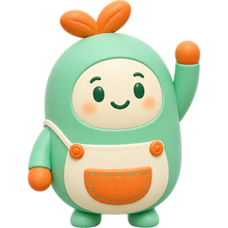

<!doctype html>
<html lang="zh"><meta charset="utf-8"><meta name="viewport" content="width=device-width, initial-scale=1">
<title>Spoonie tutor · 开发增量预览</title>
<style>
body{margin:0;background:#F7FBFA;color:#173D31;font:16px/1.5 system-ui,sans-serif}main{max-width:1100px;margin:auto;padding:24px}nav{display:flex;gap:12px;flex-wrap:wrap}button{font:inherit;min-height:44px;padding:8px 16px;border:1px solid #DDECE6;border-radius:14px;background:white;color:#173D31;cursor:pointer}button[aria-pressed=true]{background:#E0F3EA}h1{font-size:26px}h2{font-size:20px}p{margin:8px 0}.panel{max-width:390px;background:white;margin:24px auto;border-radius:16px;overflow:hidden;border:1px solid #DDECE6}.head{padding:20px;border-bottom:1px solid #DDECE6;display:flex;gap:12px;align-items:center}.head img{width:36px;height:44px;object-fit:contain}.body{padding:20px;min-height:250px}.input{padding:16px;border-top:1px solid #DDECE6}.muted{color:#64756D;font-size:14px}.notice{padding:16px;background:#EAF6F1;border-radius:14px}.primary{background:#BE570A;color:white;width:100%;margin-top:12px}.source{color:#237B55;min-height:44px;display:flex;align-items:center}textarea{box-sizing:border-box;width:100%;font:inherit;border:1px solid #DDECE6;border-radius:14px;padding:12px;color:#173D31;min-height:60px}.error{color:#B5454D}.row{display:flex;gap:12px;flex-wrap:wrap}
</style>
<main><h1>Spoonie 导师增量预览</h1><p class="muted">开发 fixture · 不连接 API，不生成回答，不保存测验成绩。原学堂五页布局与真机验收保持独立。</p>
<nav id="nav"></nav><article class="panel"><header class="head"><div><strong>勺勺 · 学习导师</strong><div class="muted" id="label"></div></div><button aria-label="关闭预览面板" onclick="document.querySelector('.panel').hidden=true">关闭</button></header><div class="body" id="body"></div><footer class="input" id="input"></footer></article></main>
<script>
// Arthur: NarIyirm
// 中文：此独立画布只对照导师四个增量状态，fixture 不调用真实服务或模型。
// EN: This standalone canvas compares four tutor states; fixtures never invoke a real service or model.
const scenes=[['课程问答','正在讨论：浪费与气候','<p>食物生产、运输和供应已投入能源与资源。避免浪费，能避免这些资源白白投入。</p><p class="notice">SDG 13.3 关注气候教育和意识。测验成绩记录学习表现，不能代表个人减排量。</p><span class="source">UNFCCC · 30 Sep 2024 · global</span>','<textarea aria-label="提问" placeholder="问问这节课…"></textarea><button class="primary">发送问题</button>'],['已答反馈','正在讨论：已提交的题目','<p>首次答案已记录，评分仍由服务器决定。</p><p class="notice">阶段测验进行中，自由问答暂停；已答题支持固定讲解。</p>','<div class="row"><button>解释一下</button><button>简单解释</button><button>举个例子</button></div><button class="primary">继续阶段测验</button>'],['结果复习','建议复习','<h2>阅读数据年份与范围</h2><p class="muted">近期 4 个样本中 2 个错误 · 30天窗口</p><p>2024 年是发布年，2022 年是统计时期。额外练习不改变升级或 XP。</p><button>阅读相关课程</button><button>练一道类似题</button>','<p>这个知识点容易混淆，需要换个例子吗？</p><div class="row"><button>看看例子</button><button>暂时不用</button><button>关闭主动帮助</button></div>'],['错误与重试','正在讨论：材料识别','<p class="error" role="status">导师暂时无法完成。问题已保留，可以重试。</p><p class="muted">同一次请求重用 requestKey；服务端不重复保存消息。</p>','<textarea aria-label="已保留的问题">这个材质是什么意思？</textarea><button class="primary">重试这次请求</button>']];
function show(i){document.querySelector('.panel').hidden=false;document.querySelector('#label').textContent=scenes[i][1];document.querySelector('#body').innerHTML=scenes[i][2];document.querySelector('#input').innerHTML=scenes[i][3];document.querySelectorAll('nav button').forEach((b,j)=>b.setAttribute('aria-pressed',i===j));}
scenes.forEach((scene,i)=>{const button=document.createElement('button');button.textContent=scene[0];button.onclick=()=>show(i);document.querySelector('#nav').append(button);});show(0);
</script></html>
